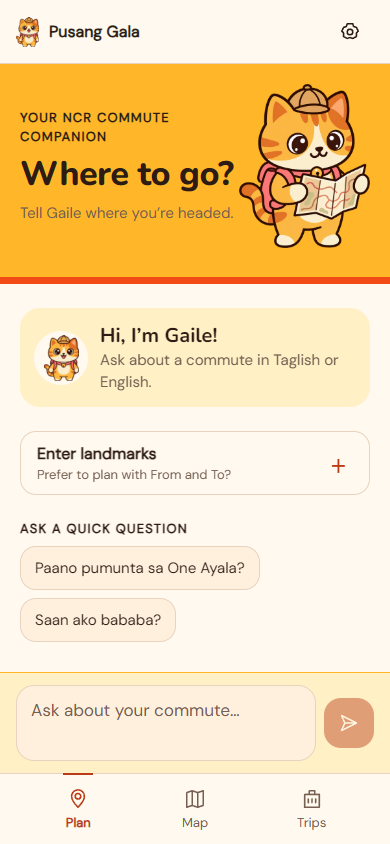

One system, across the journey.
The Sunset Playful identity: cream, golden yellow, sunset orange, warm brown and the supplied Gaile artwork. Bundled Nunito headings and DM Sans body text, shared spacing and aligned edges keep it readable. Plain lists for management; stronger containment for a selected route or a focused sheet. Labels and numbering carry meaning alongside color.
4-point spacing base · 20-point page margin · at least 44 × 44 touch targets · 200% text stress checks · bundled fonts, no blocking launch delay or ornamental motion.
Useful when something is unavailable.
The prototype exercises missing resources, outside-NCR input, unavailable location, example provenance, cancelled sheets and manual progress. The additional native states below are interface specifications for integration, not simulated working services.
Keep endpoints visible. Route facts appear as soon as the deterministic search finishes.
Cards stay readable. Display complete validated explanation units; raw tokens never reach the screen.
Explanation interrupted
Your route and directions are still available. No generated advice replaces the source-backed cards.
Choose your starting point
Location permission is denied. Manual landmark entry remains available; permission is requested when useful.
Keep separate values and their source dates. Do not average them or mark the route field-verified.
This route changed
Saved record IDs no longer match the installed pack. Keep the endpoints, but withhold obsolete steps.
The complete screen set.
Click a screenshot to inspect its hierarchy above. Every experience shares the same controls and visual language.
Design reasoning and remaining evidence.
Three destinations keep planning, route context and reusable journeys easy to find. Home starts a conversation directly; manual landmarks open on demand. Questions during a trip keep the current route and step. A continuous timeline exposes the whole journey; the active view focuses on the next physical action. Resource management tells the commuter what still works.
These are HIG-informed design decisions adapted to the Android codebase, not an Apple Maps reproduction or an iOS platform migration. First-time commuter testing, outdoor evaluation, native text scaling, screen readers and cold-offline Android acceptance are still required.